The training of the output units tries to minimize the sum-squared error E:
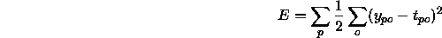
where
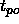
is the desired and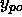
is the observed output of the output unit o for a pattern p. The error E is minimized by gradient decent using
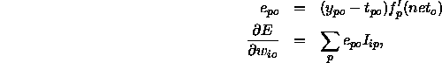
where
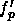
is the derivative of an activation function of a output unit o and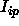
is the value of an input unit or a hidden unit i for a pattern p.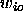
denominates the connection between an input or hidden unit i and an output unit o.
After the training phase the candidate units are adapted, so that the
correlation C between the value  of a candidate unit and the
residual error
of a candidate unit and the
residual error
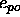
of an output unit becomes maximal. The correlation is given by Fahlman with:
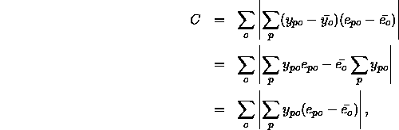
where
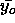
is the average activation of a candidate unit and is the average error of an output unit over all patterns p. The maximization of C proceeds by gradient ascent using
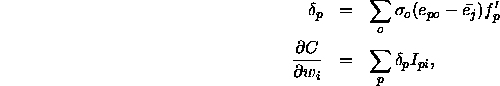
where is the sign of the correlation between the candidate unit's output and the residual error at output o.